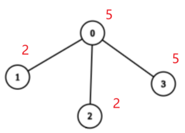

LeetCode Weekly Contest 370 Summary
Overview
This article is a summary of the weekly contest. I do not plan to discuss each problem in detail; for some problems, I will only provide a rough outline. The point of this article is self-reflection and improvement.
Achieved AC in the first three problems within 23 minutes, resulting in a ranking around 300 - more like a typing contest emphasizing speed rather than a coding contest. Brief description of problem-solving:
- Problem 1: Easy problem but got stuck for 5 minutes 😒;
- Problem 2: Similar to the first one in terms of background, also easy problem, but solved faster 😋;
- Problem 3: A real medium-level problem that required a bit more thought, solved in 15 minutes, not bad 😋;
- Problem 4: Couldn’t solve. If the data range is small, it’s a simple DP problem, but couldn’t find an optimization 😒;
I. Find Champion I
Problem Description:
There are
nteams numbered from0ton - 1in a tournament.Given a 0-indexed 2D boolean matrix
gridof sizen * n. For alli, jthat0 <= i, j <= n - 1andi != jteamiis stronger than teamjifgrid[i][j] == 1, otherwise, teamjis stronger than teami.Team
awill be the champion of the tournament if there is no teambthat is stronger than teama.Return the team that will be the champion of the tournament.
Example 1:
2
3
4
Output: 0
Explanation: There are two teams in this tournament.
grid[0][1] == 1 means that team 0 is stronger than team 1. So team 0 will be the champion.Example 2:
2
3
4
5
6
Output: 1
Explanation: There are three teams in this tournament.
grid[1][0] == 1 means that team 1 is stronger than team 0.
grid[1][2] == 1 means that team 1 is stronger than team 2.
So team 1 will be the champion.Constraints:
n == grid.lengthn == grid[i].length2 <= n <= 100grid[i][j]is either0or1.- For all
i grid[i][i]is0.- For all
i, jthati != j,grid[i][j] != grid[j][i].- The input is generated such that if team
ais stronger than teamband teambis stronger than teamc, then teamais stronger than teamc.
‘Team a will be the champion of the tournament if there is no team b that is stronger than team a.’ Use count[i] to represent the number of teams stronger than i. The answer is the i with $count[i] = 0$.
1 | class Solution { |
II. Find Champion II
Problem Description:
There are
nteams numbered from0ton - 1in a tournament; each team is also a node in a DAG.You are given the integer
nand a 0-indexed 2D integer arrayedgesof lengthmrepresenting the DAG, whereedges[i] = [ui, vi]indicates that there is a directed edge from teamuito teamviin the graph.A directed edge from
atobin the graph means that teamais stronger than teamband teambis weaker than teama.Team
awill be the champion of the tournament if there is no teambthat is stronger than teama.Return the team that will be the champion of the tournament if there is a unique champion, otherwise, return
-1.Notes
- A cycle is a series of nodes
a1, a2, ..., an, an+1such that nodea1is the same node as nodean+1, the nodesa1, a2, ..., anare distinct, and there is a directed edge from the nodeaito nodeai+1for everyiin the range[1, n].- A DAG is a directed graph that does not have any cycle.
Example 1:
2
3
Output: 0
Explanation: Team 1 is weaker than team 0. Team 2 is weaker than team 1. So the champion is team 0.Example 2:
2
3
Output: -1
Explanation: Team 2 is weaker than team 0 and team 1. Team 3 is weaker than team 1. But team 1 and team 0 are not weaker than any other teams. So the answer is -1.Constraints:
1 <= n <= 100m == edges.length0 <= m <= n * (n - 1) / 2edges[i].length == 20 <= edge[i][j] <= n - 1edges[i][0] != edges[i][1]- The input is generated such that if team
ais stronger than teamb, teambis not stronger than teama.- The input is generated such that if team
ais stronger than teamband teambis stronger than teamc, then teamais stronger than teamc.


Use directed edges to represent who is stronger, making it easier to understand than the first problem. Edge $(a,b)$ means a is stronger than b, so the teams with the strongest members have an in-degree of 0. Count the in-degrees.
1 | import java.util.Arrays; |
III. Maximum Score After Applying Operations on a Tree
Problem Description:
There is an undirected tree with
nnodes labeled from0ton - 1, and rooted at node0. You are given a 2D integer arrayedgesof lengthn - 1, whereedges[i] = [ai, bi]indicates that there is an edge between nodesaiandbiin the tree.You are also given a 0-indexed integer array
valuesof lengthn, wherevalues[i]is the value associated with theithnode.You start with a score of
0. In one operation, you can:
- Pick any node
i.- Add
values[i]to your score.- Set
values[i]to0.A tree is healthy if the sum of values on the path from the root to any leaf node is different than zero.
Return the maximum score you can obtain after performing these operations on the tree any number of times so that it remains healthy.
Example 1:
2
3
4
Output: 11
Explanation: We can choose nodes 1, 2, 3, 4, and 5. The value of the root is non-zero. Hence, the sum of values on the path from the root to any leaf is different than zero. Therefore, the tree is healthy and the score is values[1] + values[2] + values[3] + values[4] + values[5] = 11.
It can be shown that 11 is the maximum score obtainable after any number of operations on the tree.Example 2:
2
3
4
5
6
7
8
9
Output: 40
Explanation: We can choose nodes 0, 2, 3, and 4.
- The sum of values on the path from 0 to 4 is equal to 10.
- The sum of values on the path from 0 to 3 is equal to 10.
- The sum of values on the path from 0 to 5 is equal to 3.
- The sum of values on the path from 0 to 6 is equal to 5.
Therefore, the tree is healthy and the score is values[0] + values[2] + values[3] + values[4] = 40.
It can be shown that 40 is the maximum score obtainable after any number of operations on the tree.Constraints:
2 <= n <= 2 * 104edges.length == n - 1edges[i].length == 20 <= ai, bi < nvalues.length == n1 <= values[i] <= 109- The input is generated such that
edgesrepresents a valid tree.


$\forall i, values[i] \ge 1$, and ‘the sum of values on the path from the root to any leaf node is different than zero’. Hence, when performing operations, we must leave one node untouched on each path from the root to a leaf (Multiple paths may share one untouched node).
Let the set of all nodes in the graph be $V$, and the set of nodes left untouched be $U$. The goal is to maximize the score, which is given by $\sum\limits_{v\in V} v - \sum\limits_{u\in U}u$. $\sum\limits_{v\in V} v$ is simply sum(values), so to maximize the score, we want to minimize $\sum\limits_{u\in U}u$. Which nodes should we leave untouched?
For any subtree of the tree, such as the one shown below:

Assume we do not operate on the root node 0, then all the remaining nodes can be modified; assume we operate on the root node 0, then there exist nodes in the remaining nodes that cannot be modified. Whatever the remaining nodes are, i.e. leaf nodes or multiple subtrees, it doesn’t affect this conclusion.
So when should we operate on the root node? Define the minimum sum of unoperated nodes in a healthy subtree rooted at $u$ as $res(u)$. Then, $\forall x, x$ is a child node of $u$, $res(u) = \min\set{values[u], \sum\limits_x res(x)}$
The meaning of this recursive formula is:
- Either do not operate on the root node $u$, in which case the subtree is healthy, and all descendants can be operated on;
- Or operate on the root node $u$, but all subtrees of $u$ must ensure they are healthy;
- By the definition, we need to obtain the minimum sum, so we take the smaller value of the two situations;
For the example above, $res(1) = 2,res(2) = 2,res(3) = 5$
$values[0] = 5 < \sum\limits_{x\in\set{1,2,3}}res(x) = 9$, so we do not operate on the root node 0 but operate on all nodes in its subtrees.
With the recurrence relation for $res(u)$, the value of $\sum\limits_{u\in U}u$ mentioned earlier is $res(0)$, hence the maximum score is sum(values) - res(0).
Code:
1 | import java.util.ArrayList; |
IV. Maximum Balanced Subsequence Sum
Problem Description:
You are given a 0-indexed integer array
nums.A subsequence of
numshaving lengthkand consisting of indicesi0 < i1 < ... < ik-1is balanced if the following holds:
nums[ij] - nums[ij-1] >= ij - ij-1, for everyjin the range[1, k - 1].A subsequence of
numshaving length1is considered balanced.Return an integer denoting the maximum possible sum of elements in a balanced subsequence of
nums.A subsequence of an array is a new non-empty array that is formed from the original array by deleting some (possibly none) of the elements without disturbing the relative positions of the remaining elements.
Example 1:
2
3
4
5
6
7
8
Output: 14
Explanation: In this example, the subsequence [3,5,6] consisting of indices 0, 2, and 3 can be selected.
nums[2] - nums[0] >= 2 - 0.
nums[3] - nums[2] >= 3 - 2.
Hence, it is a balanced subsequence, and its sum is the maximum among the balanced subsequences of nums.
The subsequence consisting of indices 1, 2, and 3 is also valid.
It can be shown that it is not possible to get a balanced subsequence with a sum greater than 14.Example 2:
2
3
4
5
6
Output: 13
Explanation: In this example, the subsequence [5,8] consisting of indices 0 and 3 can be selected.
nums[3] - nums[0] >= 3 - 0.
Hence, it is a balanced subsequence, and its sum is the maximum among the balanced subsequences of nums.
It can be shown that it is not possible to get a balanced subsequence with a sum greater than 13.Example 3:
2
3
4
Output: -1
Explanation: In this example, the subsequence [-1] can be selected.
It is a balanced subsequence, and its sum is the maximum among the balanced subsequences of nums.Constraints:
1 <= nums.length <= 105-109 <= nums[i] <= 109
Let’s change the formulation of the problem: consecutive elements nums[i] and nums[j] in a balanced subsequence must satisfy $i < j$ and $nums[j] - nums[i] \ge j - i$.
By rearranging the inequality above, we get $nums[j] - j \ge nums[i] - i$, which means the requirement for each element in a balanced subsequence only depends on its own value and index, not those of other elements.
Therefore, this problem is similar to the Longest Increasing Subsequence, and we can solve it using DP:
DP Definition: dp[j] represents the maximum sum of elements in a balanced subsequence ending at nums[j].
Recurrence relation: $dp[j] = nums[j] + \max\set{dp[i] | (i < j) ∧ (nums[j] - j \ge nums[i] - i)}$
Code:
1 | class Solution { |
Obviously, this solution has a time complexity of $O(n^2)$, which is bad. Until end of the contest, I couldn’t figure out an optimization strategy.
I plan to describe in detail how to solve this problem in the next post, based on insights from an expert’s solution. For now, I’ll focus on studying the relevant knowledge.